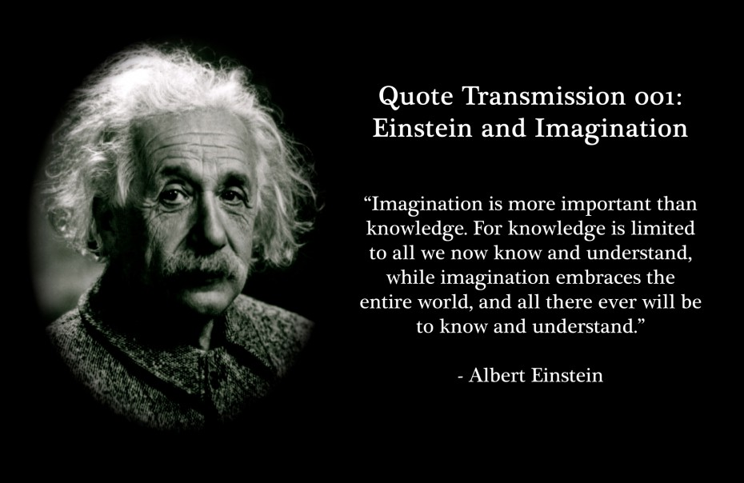
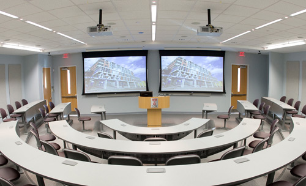

My Education
What is Education?
The term education system generally refers to public schooling, not private schooling, and more commonly to kindergarten through high school programs. Schools or school districts are typically the smallest recognized form of “education system” and countries are the largest.
New Generation Education!
At Next Generation, we believe that a nurturing, fun and safe learning environment are key to a child’s long term success. Our goal is to partner with parents and offer a developmentally appropriate educational environment where children can thrive to grow emotionally, physically, socially.
Safety and Security.
The safety of your child is our top priority. To ensure a safe environment, cameras have been placed throughout the center. While the cameras are not available for viewing from your home or work,the ability to view your child’s day within our center and at your request.we provide technology to ensure your child’s safety at the school.

The Department of Higher Education, MHRD, is responsible for the overall development of the basic infrastructure of Higher Education sector, both in terms of policy and planning. Under a planned development process, the Department looks after expansion of access and qualitative improvement in the Higher Education, through world class Universities, Colleges and other Institutions.
The Schools’ curriculum is ever-evolving and has a progressive approach supported by contemporary pedagogical practices that go a long way in widening the intellectual and creative capacity of every child. Through their comprehensive yet flexible curriculum framework, the Schools hope to make a difference in the lives of children by enabling them to be happy and successful.
The Foundation also focuses on using sports as a medium to encourage learning and breed leadership among the youth in the rural areas. Bringing people from various villages together leads to stronger bond between tribes, neighbours and families. This initiative is a medium to enhance community partnership and promote traditional rural sports.

The Schools’ curriculum is ever-evolving and has a progressive approach supported by contemporary pedagogical practices that go a long way in widening the intellectual and creative capacity of every child. Through their comprehensive yet flexible curriculum framework, the Schools hope to make a difference in the lives of children by enabling them to be happy and successful.